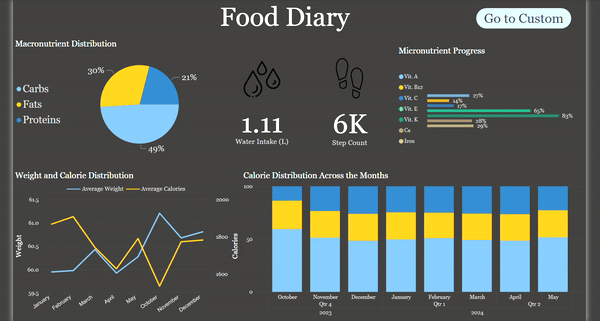
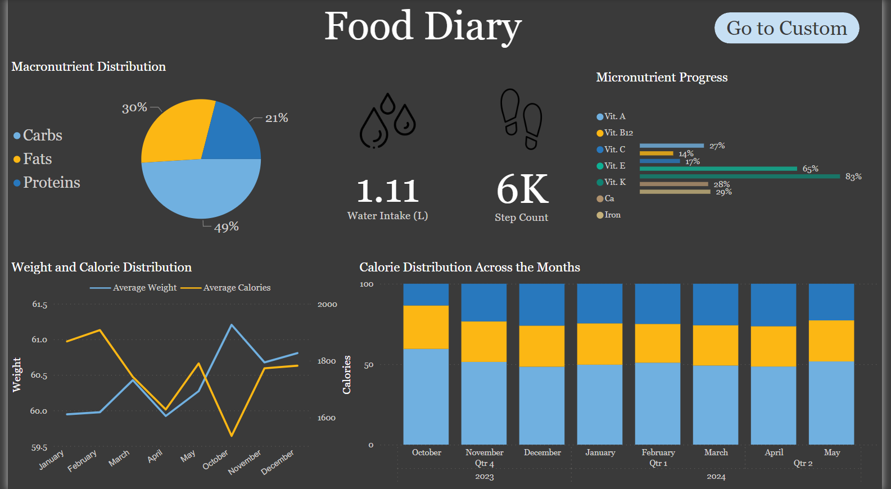
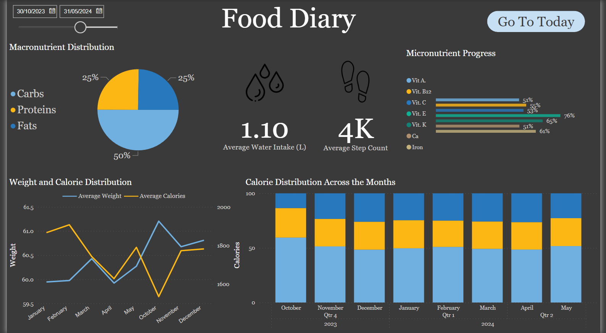

LifeStyle Tracker
Welcome to the LifeStyle Tracker Power BI dashboard, a comprehensive tool designed to help you track and analyze your daily and periodic nutritional intake and physical activity. This dashboard provides a detailed overview of your macronutrient and micronutrient consumption, water intake, step count, and weight trends throughout the year. Below is a short demonstration and a description of the dashboard elements and their functionality.
Note. I am continuously updating the features of the dashboard to enhance its functionality and provide more valuable insights. Feel free to explore the dashboard, and if you have any feedback or suggestions, please reach out. Your input is invaluable in making this tool even better! Stay tuned for new features and improvements!
Today View
Macronutrient Distribution of the Day: A visual representation of your carbohydrate, protein, and fat intake for the current day. This chart helps you understand how balanced your diet is on a daily basis.
Macronutrient Distribution of the Day: A visual representation of your carbohydrate, protein, and fat intake for the current day. This chart helps you understand how balanced your diet is on a daily basis.
Water Intake of the Day (Data Card): A data card displaying the total amount of water consumed today, allowing you to easily track if you are meeting your hydration goals.
Step Count of the Day (Data Card): A data card showing the total number of steps taken today, helping you monitor your physical activity levels.
Micronutrient Progress of the Day: A detailed visualization of your intake of essential vitamins and minerals for the day, ensuring you are getting the necessary nutrients for optimal health.
Custom Date Range View
Date Slicer: An interactive date slicer that allows you to select a custom date range for more detailed analysis. You can choose any period within the year to see the aggregated data for that time frame.
Average Macronutrient Distribution for the Selected Period: A chart showing the average intake of carbohydrates, proteins, and fats over the selected period. This helps in understanding your dietary trends and making necessary adjustments.
Average Water Intake for the Selected Period in Liters (Data Card): A data card displaying the average daily water intake over the chosen date range, providing insights into your hydration habits.
Average Step Count for the Selected Period (Data Card): A data card showing the average daily steps taken during the selected period, useful for assessing your overall physical activity levels.
Average Micronutrient Progress for the Selected Period: A chart summarizing the average intake of key vitamins and minerals over the selected date range, helping you ensure consistent nutrient intake.
Additional Features (Available in Both Views)
Average Weight and Calories Across the Months (Line Chart): A line chart tracking your weight and total caloric intake month by month. This visualization helps you correlate your weight changes with your caloric consumption, providing valuable insights for weight management.
Stacked Bar Charts Showing Calorie Distribution Across Carbs, Proteins, and Fats by Month/Quarter: Stacked bar charts that break down your caloric intake into carbohydrates, proteins, and fats for each month or quarter. This allows for an in-depth analysis of your dietary composition over time.
Conclusion
The Food Diary dashboard is a potentially powerful tool for anyone looking to monitor and improve their dietary and physical activity habits. By providing detailed, customizable views of your nutritional intake and activity levels, this dashboard helps you make informed decisions about your health and wellness. Whether you are tracking daily habits or analyzing long-term trends, the Food Diary dashboard offers valuable insights to support your journey towards a healthier lifestyle.
Relevant links:
GitHub Repo - LifeStyle Tracker Dashboard
Date published: 1st June, 2024
Date modified: 1st June, 2024
Tags
Power BI
Data Visualization
Data Storytelling